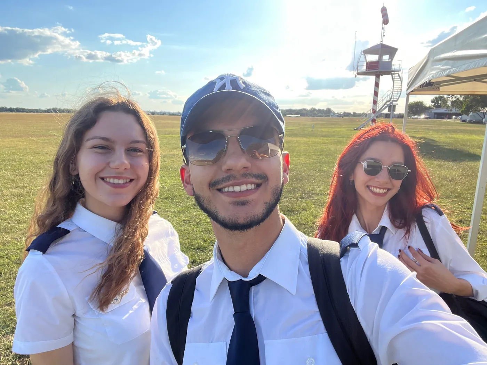
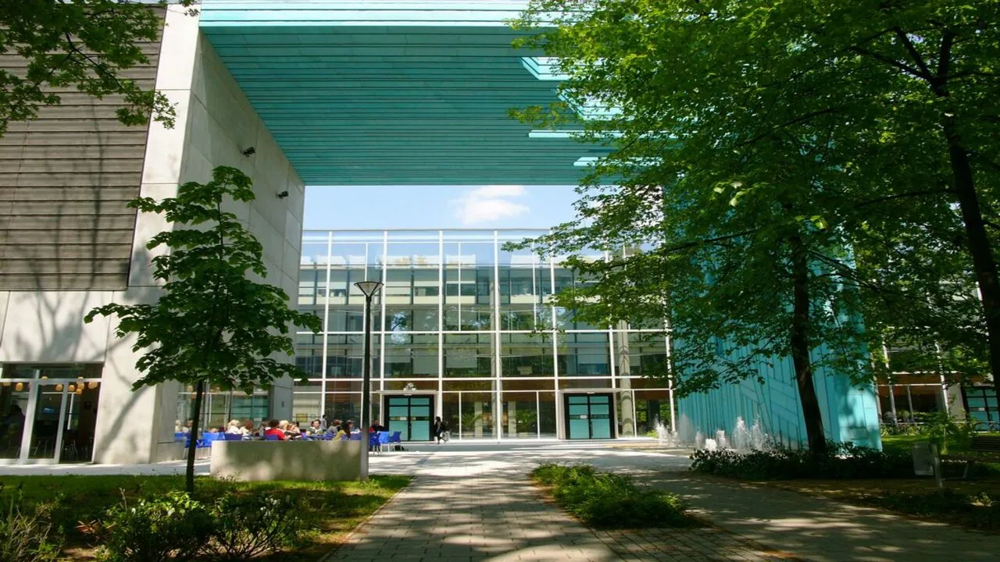
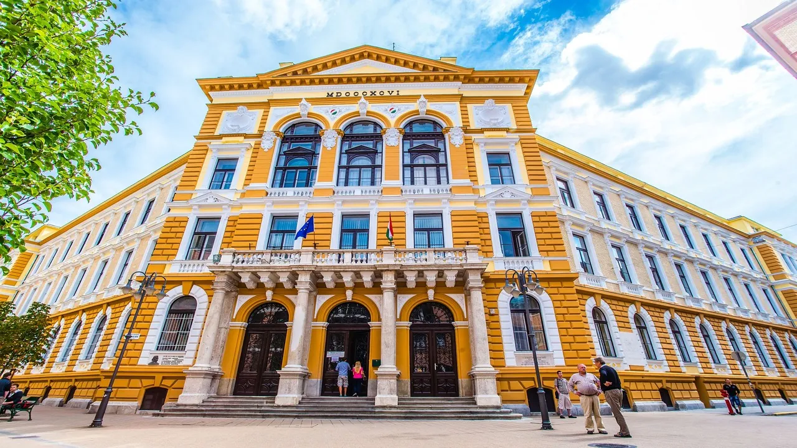
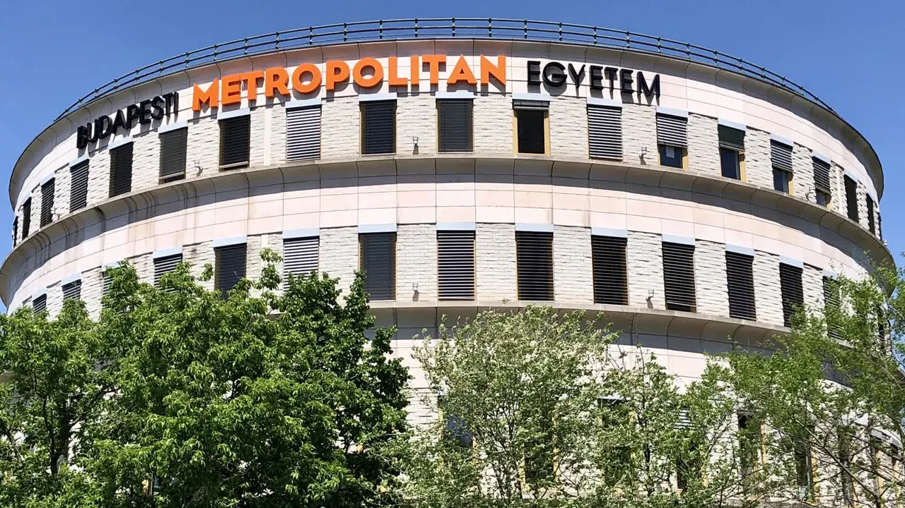

Macaristan üniversitelerine başvuru süreci, birçok öğrencinin düşündüğünden çok daha sade ilerler. Başvuru dosyası; apostilli diploma, İngilizce transkript, pasaport fotokopisi ve İngilizce özgeçmişten oluşur. Banka dökümü ise başvuru aşamasında değil, vize başvurusu sırasında istenir. Lisans programlarında B2 düzeyinde İngilizce beklenir; ancak üniversitelerin büyük bölümü dil belgesi yerine kendi mülakatını uygular.
Hun Education olarak, başvuru dosyanızı sizin adınıza hazırlıyor ve eksik kalan noktaları başvurudan önce tamamlıyoruz. Belge hazırlığından üniversite yazışmalarına kadar sürecin tamamını öğrencilerimiz adına yürütüyoruz.
Bu sayfada hangi belgelerin istendiğini, dil şartının gerçekte ne olduğunu, giriş sınavı olan bölümleri ve başvuru takvimini adım adım anlatıyoruz.
Kimler başvurabilir?



İyi haber şu ki adayların büyük çoğunluğu zaten uygun. Yine de üç başlığı evrak hazırlığına başlamadan netleştirmenizde fayda var; böylece boşuna zaman kaybetmiyorsunuz.
| Program | Üst yaş sınırı |
|---|---|
| Hazırlık programları | 25 |
| Lisans | 25 |
| Yüksek lisans | 28 |
| Tıp, diş hekimliği, eczacılık | Yaş sınırı yok |
Yaşınız bu sınırların üzerindeyse yine de yazın. Sınırlar gerçek ama çoğu durumda uygun bir yol çıkar; hangisi olduğunu ilk görüşmede söyleriz.
Uyruk
25'ten fazla ülkenin vatandaşı adına başvuru gönderebiliyoruz: Avrupa Birliği ülkeleri, ABD ve Latin Amerika ülkeleri, Arnavutluk, Cezayir, Azerbaycan, Bosna Hersek, Mısır, Gürcistan, Ürdün, Kazakistan, Kırgızistan, Moğolistan, Katar, Rusya, Sırbistan, Tayland, Türkiye, Ukrayna, Özbekistan ve Vietnam. Listede yoksanız yine de yazın; doğru kanalı gösterelim.
Mali yeterlilik
Konsolosluk eğitiminizin finanse edildiğini görmek ister ve beklenen tutar sanıldığından düşük: aylık ortalama 650 € × 10 aylık akademik yıl, yani yaklaşık 6.500 €; kendi ya da sponsorunuzun hesabında, düzenli gelir kanıtıyla birlikte. Bu Macaristan'a özgü bir kural değil, her ülkenin konsolosluğu aynı şeye bakar. Sponsor mektubuyla nasıl belgeleneceğini birlikte planlıyoruz.
Profiliniz uygun mu? Tek mesajla öğrenin. Ön Görüşme Al
Gerekli belgeler ve dil şartı
Aşağıdaki belgeler her başvuruda istenir. Programa göre ek belge çıkabiliyor; kabul şartlarını başvurudan önce birlikte gözden geçirdiğimiz için eksik bir dosyayla yola çıkmıyorsunuz.
| Belge | Biçim şartı | Not |
|---|---|---|
| Başvuru formu | Üniversitenin kendi sistemi | Her üniversite ayrı form ister |
| Pasaport fotokopisi | Fotoğraflı sayfa | Pasaportun geçerlilik süresi eğitim süresini kapsamalı |
| Diploma | Apostilli | Mezun değilseniz öğrenci belgesi ile ön başvuru yapılabilir |
| Transkript | İngilizce veya yeminli tercüme | Lise ya da lisans not dökümü |
| İngilizce özgeçmiş | Tercihen Europass, fotoğraflı | Yüksek lisansta ağırlığı artar |
| Banka hesap dökümü | Son 6 ay, veli/sponsor hesabı | Başvuru için zorunlu değil. Vize aşamasında gerekir; eğitiminizi başkası finanse ediyorsa sponsor mektubu ekleyin |
| Dil belgesi | IELTS veya eşdeğeri | Çoğu zaman istenmez: üniversitelerin çoğu kendi mülakatını yapar |
Dil yeterliliği
Kataloğumuzdaki neredeyse her program İngilizce yürür, dolayısıyla dil bu başvurunun temel konusu. Ancak burada adayların çoğunun bilmediği bir kolaylık var: Macaristan'da üniversitelerin büyük bölümü dil belgesi istemez, bunun yerine kendi mülakatını ya da çevrim içi sınavını yapar. Belge isteyen okullarda ise üniversiteye ve bölüme göre IELTS 5, 6 veya 6,5 aranır.
| Seviye | Beklenen | Belgesi olmayanlar için |
|---|---|---|
| Lisans | Pratikte B2 · istenirse IELTS 5, 6 veya 6,5 | İngilizce Dil Hazırlık programı |
| Yüksek lisans | İstenirse IELTS 6,5 veya eşdeğeri | Hazırlık + yeniden başvuru |
| Hazırlık | Üniversitenin kendi seviye tespit sınavı | Belge şartı yok |
Giriş sınavı ve mülakat
YKS puanınız istenmez; bunun yerine üniversite sizi kendi ölçütleriyle değerlendirir. Bu çoğu aday için avantaj: tek bir sınav gününe değil, lise notlarınıza ve alanla ilgili bir değerlendirmeye bakılır. Hazırlık süreleri de kısa. Alan bazında beklenenler:
| Alan | Değerlendirme | Hazırlık süresi |
|---|---|---|
| Tıp, diş hekimliği, eczacılık | Kimya ve biyoloji sınavı, sözlü ya da yazılı | 6–10 hafta |
| Mühendislik | Çevrim içi fizik ve matematik sınavı | 4–6 hafta |
| Mimarlık | Fizik, matematik ve portfolyo | 8–12 hafta |
| Film, tasarım, sanat | Portfolyo ve/veya film sunumu | Portfolyo birikimine bağlı |
| İşletme, sosyal bilimler | Yazılı test ve/veya mülakat uygulanabilir | 2–4 hafta |
Sınava hazırlığı yalnız yürütmüyorsunuz: hangi konuların çıktığını, geçmiş adayların nerede zorlandığını ve kaç haftaya ihtiyacınız olduğunu danışmanınız baştan söyler.
Sınava hazırlığı yalnız yürütmüyorsunuz: hangi konuların çıktığını, geçmiş adayların nerede zorlandığını ve kaç haftaya ihtiyacınız olduğunu danışmanınız baştan söyler.
Hazırlık süreleri Hun Education danışmanlarının başvuru dosyalarından edindiği saha gözlemidir, üniversitelerin resmî tavsiyesi değildir. Kabul kararı her zaman üniversiteye aittir.
Başvuru takvimi ve süreç




Macaristan'da yılda iki başlangıç dönemi bulunur; yani bir dönemi kaçırsanız bile altı ay sonra yeniden başlayabiliyorsunuz. Yine de erken başvurmanızı öneriyoruz, çünkü kontenjan dolduğunda dönem ilan edilen tarihten önce kapanabilir. Erken başvuran aday hem daha geniş bir program listesinden seçer hem de vize takvimini rahat rahat planlar.
| Dönem | Eğitim başlangıcı | Son başvuru | Dosyayı hazırlamaya başlama |
|---|---|---|---|
| Güz | Eylül | Nisan – Haziran (bazı okullar Temmuz sonuna kadar) | Ocak – Şubat |
| Bahar | Şubat | Ekim sonu – Kasım | Ağustos – Eylül |
Adım adım süreç
Dosya incelemesi
Belgeleriniz ve akademik geçmişiniz değerlendirilir, hangi programlara gerçekçi şansınız olduğu belirlenir.
Ön Kabul Mektubu
Başvuru üniversiteye iletilir ve olumlu değerlendirme sonrası Ön Kabul Mektubu düzenlenir.
Ödeme ve kayıt
Üniversitenin talep ettiği ödeme yapılır; dekont başvuru dosyasına eklenir.
Nihai Kabul Mektubu
Resmî beyan niteliğindeki Kabul Mektubu e-posta ile iletilir. Vize başvurusunun temel belgesidir.
Vize başvurusu
Kabul Mektubuyla en yakın Macaristan Konsolosluğuna başvurulur. Karar tamamen konsolosluğa aittir.
Seyahat ve karşılama
Vize sonrası uçuş, konaklama ve karşılama planlanır. Budapeşte ekibimiz sizi havalimanında karşılar, yurda yerleştirir ve ilk alışverişe kadar yanınızda olur.
Altı adımın tamamında yanınızdayız. Dosyayı biz kuruyoruz, sınav hazırlığını birlikte planlıyoruz, konsolosluk randevusunu takip ediyoruz ve Macaristan'a vardığınızda sizi ekibimiz karşılar.
Sık yapılan hatalar
- Apostili sona bırakmak. En sık kaybedilen zaman burada. Apostil çeviriden önce alınmalıdır.
- Banka dökümünü başvuru anında hazırlamamak. Son 6 ayı kapsaması gerektiği için geriye dönük düzeltilemez.
- Tek üniversiteye başvurmak. Kontenjanlar dönem içinde kapanabildiği için birden fazla seçenekle ilerlemek riski azaltır.
- Mezun olmadan başvurulamayacağını sanmak. Son sınıf öğrencileri öğrenci belgesiyle ön başvuru yapabilir; diploma sonradan tamamlanır.
Sık sorulan sorular
Hayır, YKS puanı istenmez. Üniversiteler kendi kabul sürecini yürütür: lise notlarınıza bakar, sağlık, mühendislik, mimarlık ve sanat programlarında ise kendi giriş sınavını ya da mülakatını yapar. Yani tek bir sınav gününe değil, konusu belli ve hazırlanabilir bir değerlendirmeye giriyorsunuz.
Evet. Üniversitelerin çoğu zaten dil belgesi istemez, kendi mülakatını yapar. B2 seviyesinde değilseniz üniversite bünyesindeki İngilizce Dil Hazırlık programına başvurabilirsiniz; ücretler yıllık 2.500 €'dan başlar ve program başarıyla tamamlandığında bölüme geçiş yapılır.
Konsolosluğun verdiği yazılı ret gerekçesini üniversiteye ilettikten sonra öğrenim ücreti genellikle 30 iş günü içinde iade edilir. Başvuru, sınav ve kayıt ücretleri iade kapsamı dışındadır. Kesin koşullar hizmet sözleşmenizde yer alır.
Belgeler İngilizce olmalı ya da yeminli tercüme ile İngilizceye çevrilmelidir. Diplomanın ayrıca apostil şerhi taşıması gerekir. Apostil, belgenin düzenlendiği ülkedeki yetkili makamdan alınır ve çeviriden önce yapılması zaman kazandırır.
Kaynaklar ve doğrulama
- Belge, dil şartı, giriş sınavı ve takvim bilgileri danışmanlık ekibimiz tarafından üniversitelerin güncel başvuru koşullarına göre derlenir ve her başvuru dönemi öncesinde gözden geçirilir.
- Hazırlık süreleri, danışmanlarımızın yürüttüğü başvuru dosyalarından edinilmiş saha gözlemidir; üniversitelerin resmî tavsiyesi değildir.
- Kabul kararı üniversiteye, vize kararı ilgili konsolosluğa aittir. Nihai koşullar için üniversitenin resmî başvuru sayfasını esas alınız.
Değişiklik günlüğü
- : İçerik editoryal ve SEO denetiminden geçirildi; kaynak beyanları güncellendi.
- : Sayfa yayına alındı; ücret aralıkları, başvuru takvimi ve giriş sınavı şartları güncel veriyle yazıldı.